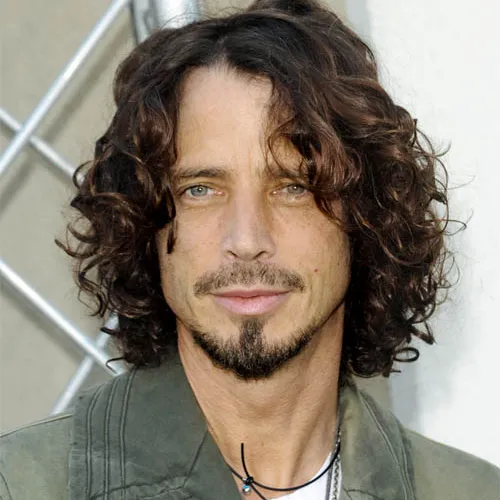

Chris Cornnel

Summanry
I'm the frontman of an american rock band called... Soundgarden!
Education
- Sex, Drugs and Rock n' Roll
Work Experience
Skills
- Singer 🔥🔥🔥🔥🔥
- Guitarist 🔥🔥🔥
- lyricist 🔥🔥🔥🔥🔥🔥🔥🔥🔥
Awards and Certifications
- Alternative Music Video (1995)
- Best Metal Performace (1995)
- Best Hard Rock Performace (1995)
- MTV Video Award for Best Rock Video (1994)
- Stevie Ray Vaughan Award (2007)